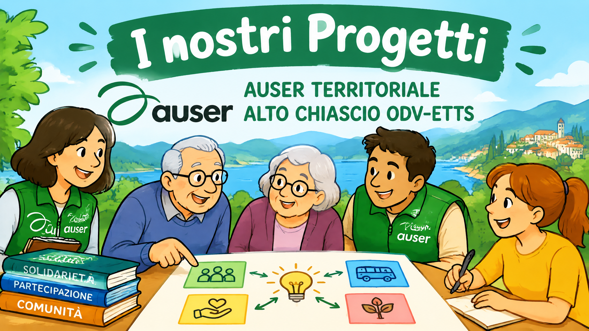
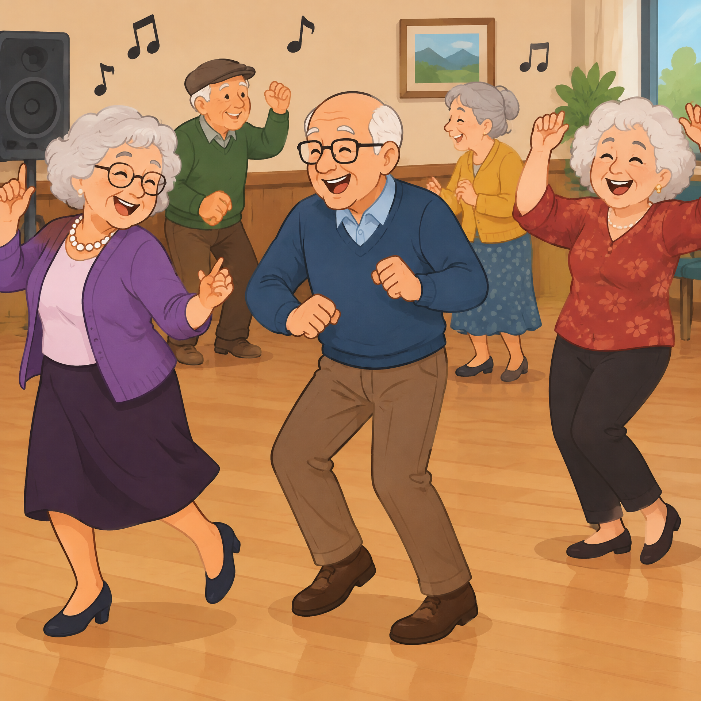
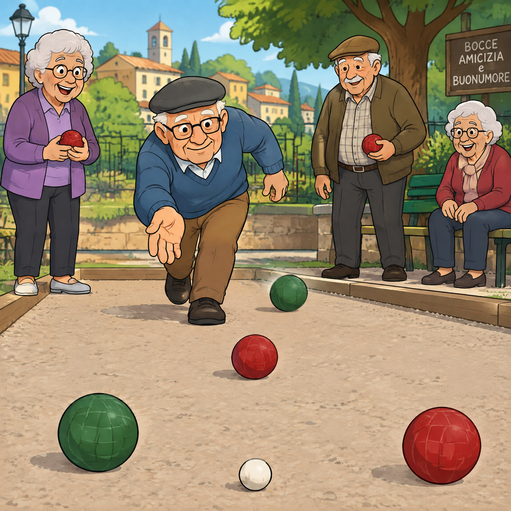
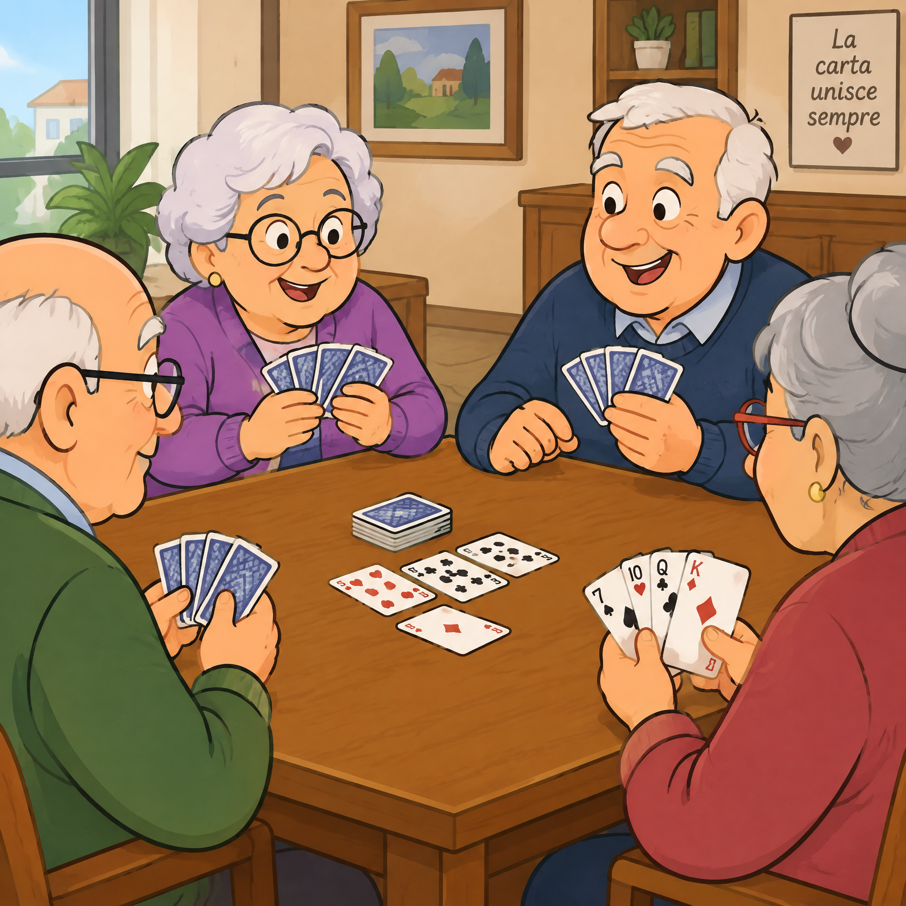
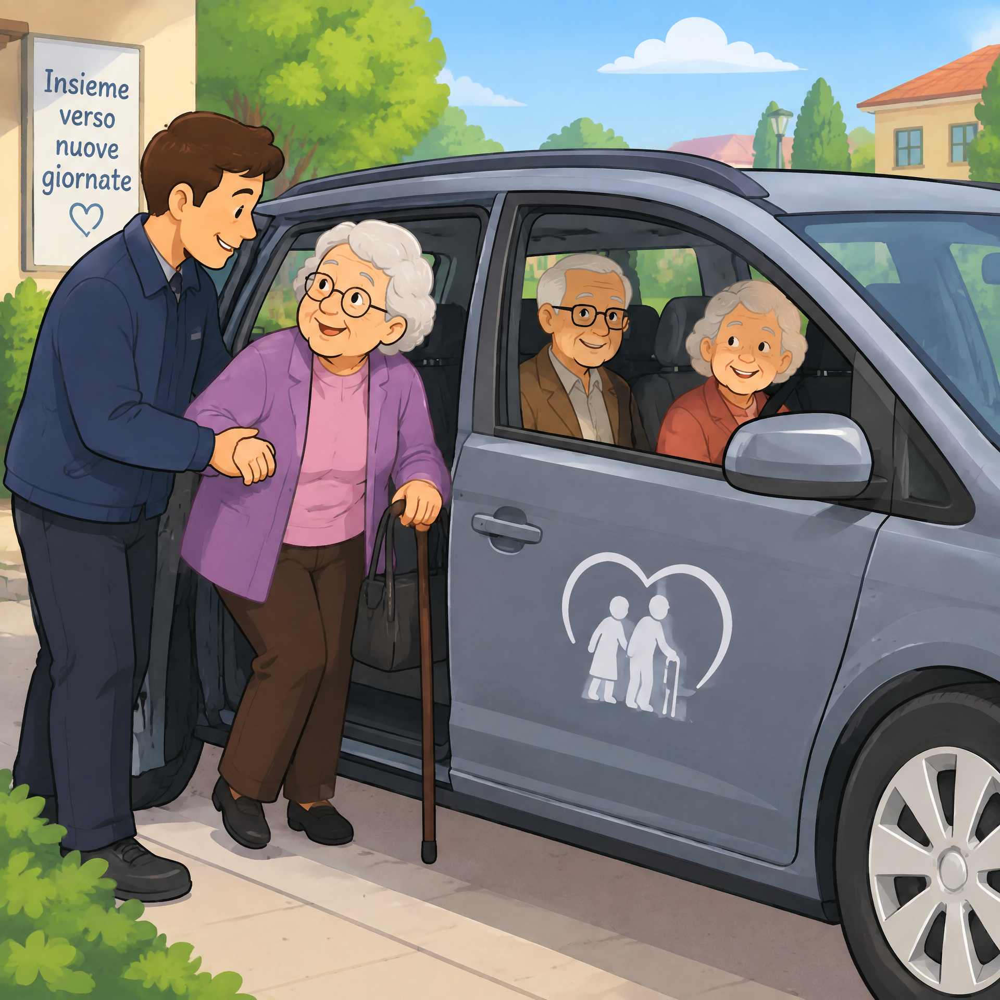
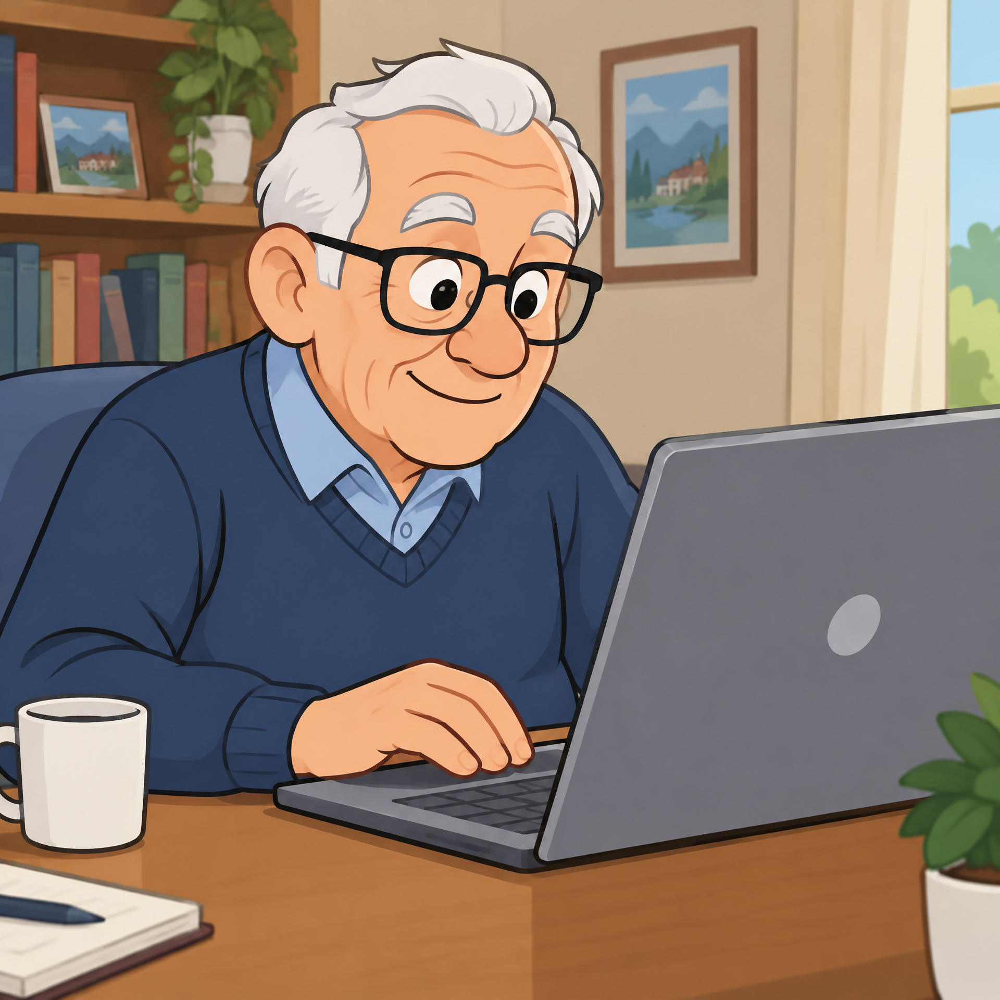
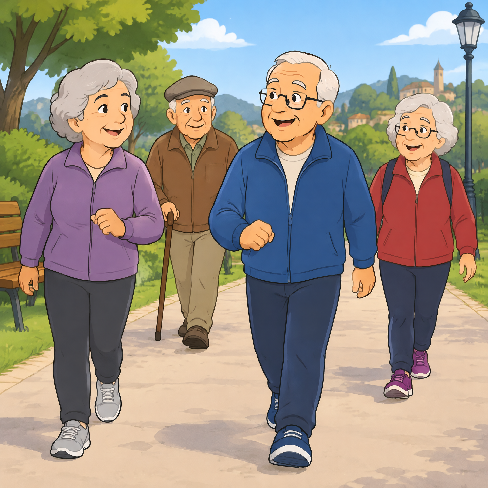

I nostri Progetti

Si balla

Si gioca a bocce

Si gioca a briscola

Vengono accompagnati gli anziani dove serve

Si insegna ad utilizzare le nuove tecnologie

Si fanno passeggiate di salute
Sostenere il volontariato e diventare volontari aiuta le persone a mantenersi attivi e a sentirsi parte integrante della società oltre che a sostenere chi è in difficoltà